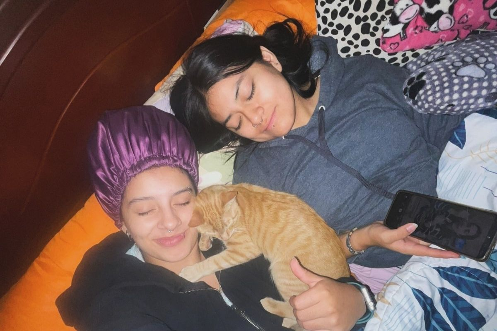
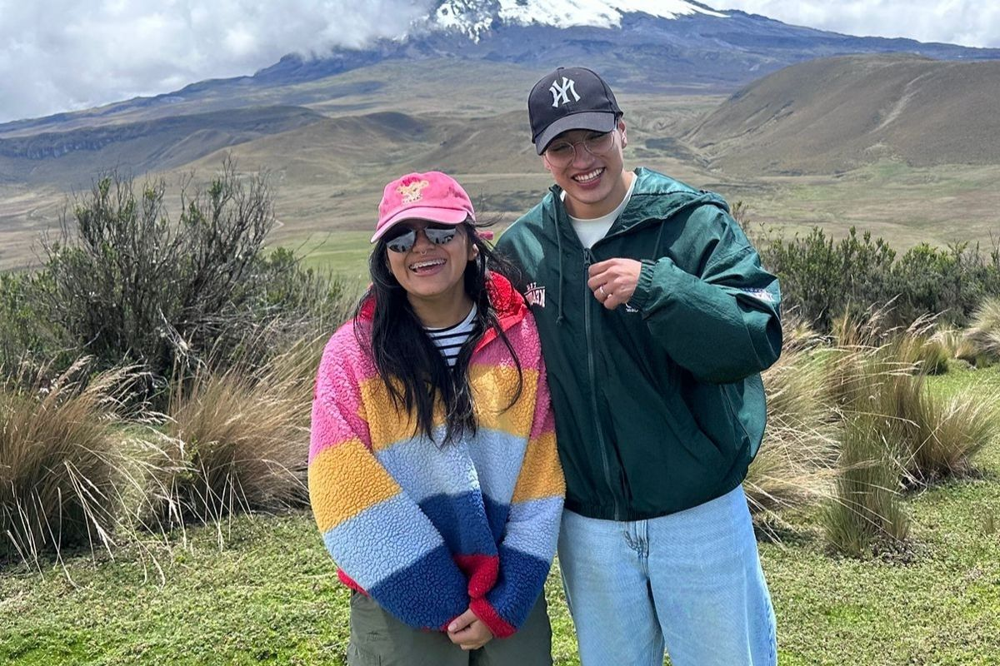
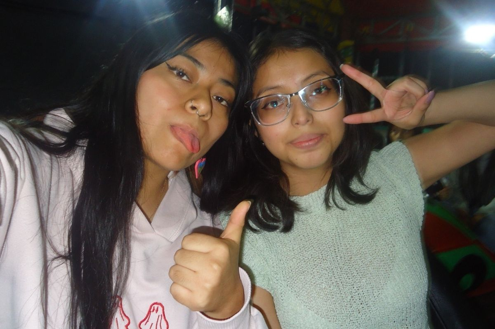
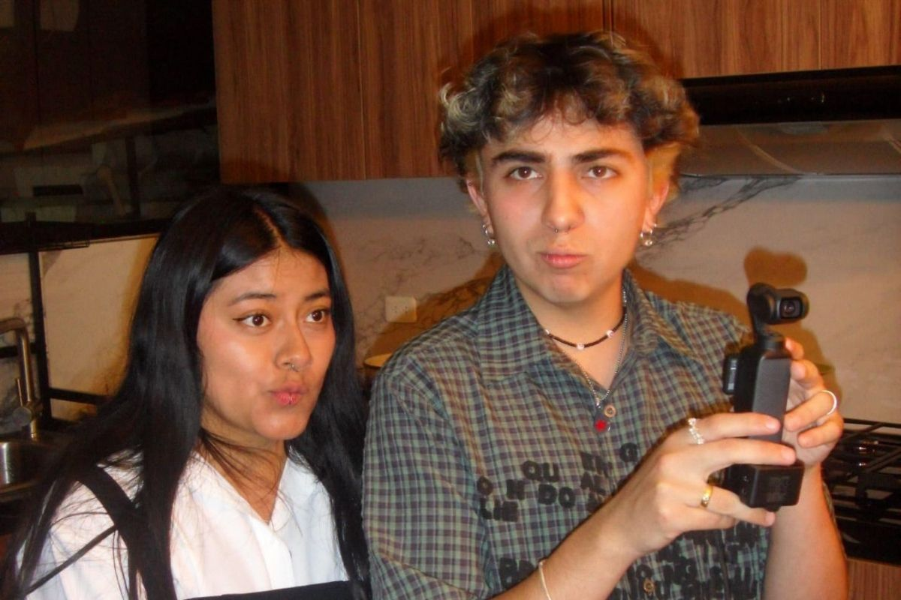
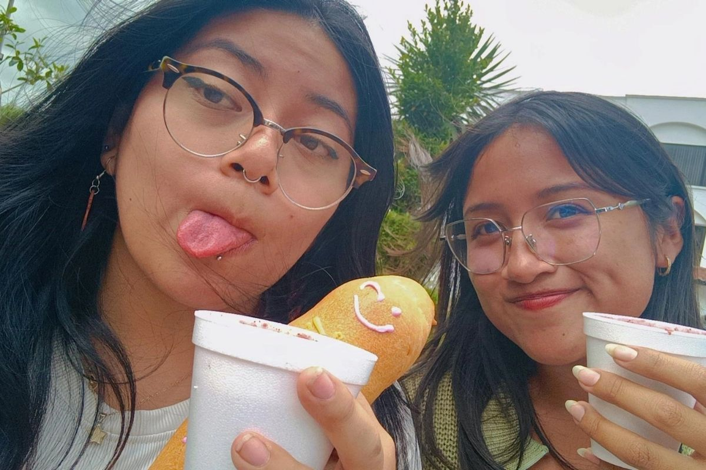

Estas son las personas a las que elegí como mi segunda familia:
Melanny Vivas a.k.a. Kuka, es una de mis mejores amigas, por no decir la mejor, llevamos 10 años conociéndonos. Kuka siempre ha estado cuando la necesito, fuimos parte de todas nuestras etapas importantes, desde el primer amor, la primera ruptura de corazón, cambios de casas, idas al cine, fiestas, elegir una carrera, época otaku. Con la kuka puedo hablar de lo que sea cuando sea, ha sido uno de los mayores apoyos que la vida y Dios me pudo dar, si las almas gemelas existen, la kuka y yo estamos unidas. Compartimos muchos recuerdos felices en mi casa, en su casa, en conciertos , saliendo con un dólar o a veces con más, acompañandome a un viaje de ida y vuelta a Riobamba a matricularme , hacer deberes juntas, llorar juntas, estar lejos la una de la otra y aun así seguir queriendonos como nos queremos. Gracias kuka por mantenerme con vida.

Jossué Castillo a.k.a. Jossu es una de esas amistades que se tardan en llegar, pero llegan y llegan con un mensaje para darte, yo digo que es un vocero de Dios, nos conocimos en primer semestre de la carrera, y aunque ya no estudiemos lo mismo, su amistad conmigo se ha fortalecido los últimos meses, ha sido junto con la Kuka uno de mis pilares y una de mis razones para seguir con vida. Cuando las personas suelen decir que hay pocos amigos valiosos, es verdad, el Jossu es uno de mis amigos valiosos y es alguien por quien yo iría a la guerra, si hace algo bien me alegraré toda la vida, si hace algo mal estaré para él, si le pasa algo malo tendré mi mano en su hombro y su nombre en mis oraciones. El Jossu me ha enseñado tanto sobre vivir y como la vida es linda en los últimos meses que gracias a él veo todo en perspectiva, si las cosas pasan por algo, es por algo, es el plan de Dios. Siempre le voy a estar agradecida por escucharme llorar innumerables veces, por ayudarme en mis momentos de crisis, por escucharme y por acompañarme por llamada hasta llegar a mi casa.

Solange Morales a.k.a. Sol, es una de mis amistades más duraderas, llevamos conociéndonos 14 años, incluso tenemos videos juntas cuando éramos niñas. Es denso pensar como ha pasado el tiempo y como nos hemos visto cambiar, a pesar de que últimamente no compartimos mucho por nuestros horarios o por nuestra disponibilidad, siempre su persona está en mis pensamientos, mi corazón y mis oraciones. Un recuerdo lindo que tengo con ella es sentarnos en los recreos a comer en el graderío del colegio frente a las canchas de basket y robarle su comida, aunque suene mal, pero su abuelita siempre le mandaba cosas full ricas y obvio yo siempre le remaba. Gracias Sol por estar en las buenas y en las horribles por darme tu compañía y tus consejos, aunque me duelan porque tu siempre me trataste como una figurita frágil.

A pesar de conocernos el mismo tiempo que con Sol, Juan y yo empezamos a ser amigos a los 13 años y con la insistencia de Melanny, en mi defensa Juan siempre fue un niño raro, pero con el paso del tiempo descubrí que tenemos los mismos gustos en algunos aspectos, y que viviera cerca del colegio era una ventaja para nosotros. Uno de mis recuerdos favoritos es ir a una feria de stickers con la Kuka y la Mona e ir en corredor, por alguna razón no se bajaron con nosotras y acto seguido vemos como mis amigos se van de largo y bueno esperamos que regresen en el de regreso, lo hicieron, compramos muchísimos stickers y posters, que hasta el día de hoy tengo en mi cuarto, y una pizza artesanal malísima. Juan es como mi otra mitad que se fue, ahora vive en Australia y viene de vez en cuando, llevo un año sin verle y me duele en toda el alma, ahora con su situación migratoria el panorama no es esperanzador, y el que venga se ve aún más lejos, no hay día en que no piense en él y como sería nuestra vida si estudiase con nosotros en Ecuador, tal vez siguieramos jugando Just Dance en su casa después de clases, pero tal vez no compartiríamos tatuajes a juego.

Melany Guañuna a.k.a. Mela, es una de mis amistades más recientes y es alguien con la que conecté muy rápido el primer día de clases, a pesar de tener diferentes edades (un año), pensamos casi igual en ciertas situaciones y por ella la universidad ha sido menos terrible y una experiencia que tal vez me gustaría repetir. Hemos pasado por malísimas, cosas de la u y cosas en nuestras vidas, y también por buenísimas como salir al cine o hablar de nuestros desastres amorosos.
